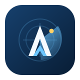

TaskBandit
Self-hosted chores, approvals, streaks, web/PWA clients, and Android support.
MindBuzz
Self-hosted quiz sessions for classrooms, team sessions, events, and training.

Aviation monitoringVATSIM Monitor
Local-first monitoring for watched VATSIM controller positions and Discord alerts.